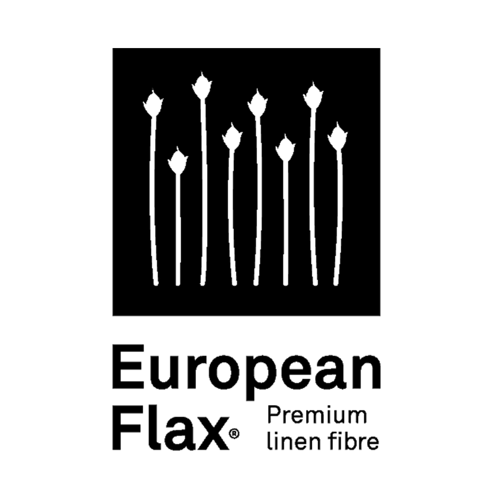
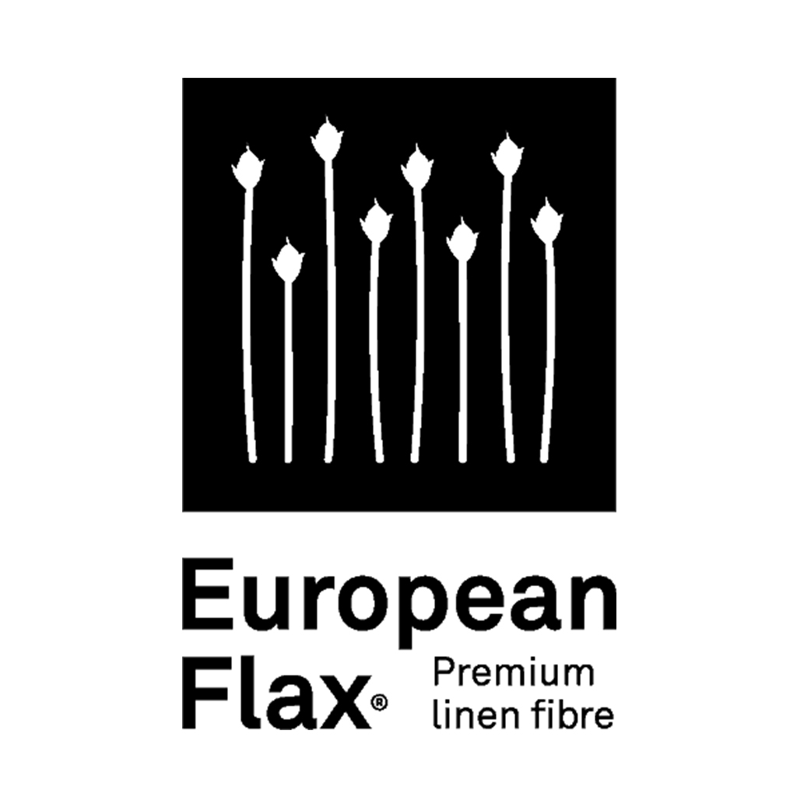

Bridging Physical &
Digital Materials
Creating an integrated phygital materials ecosystem that democratises access to sustainable materials and accelerates the transition to a circular economy through seamless physical-digital experiences.
A Space for Creative Collaboration
The Phygital Materials Bureau represents a world-class education facility that enables "Thinking Through Making across the Spectrum of Reality". We're exploring and developing the materials of tomorrow, readying them for digital integration and discoverability.
Advanced Research
Our flexible hybrid bureau is library, studio and laboratory, where students, industry and the public can discover, explore and develop new sustainable materials and manufacturing opportunities.
Digital Integration
Through strategic partnerships and pioneering computational methods we capture and merge physical material properties and their certified metadata with their digital appearance attributes, responsiveness and adaptability across platforms.
Collaborative Innovation
We're creating a stronger, more cohesive campus community and Kingston identity by facilitating opportunities for interdisciplinary collaboration using industry-standard and future-facing creative technologies.
Materials Prepared for the Future
We started by creating digital twins of sustainable materials for use in computer graphic, gaming and digital product creation platforms like Clo3D and Unreal Engine.
Physical Scanning & Analysis
High-resolution scanning captures material appearance and attributes like surface texture, sheen, translucency. Physical properties like drape and stretch are analysed through mechanical processes.
Digital Twin Creation
Accurate digital representations with validated physical properties are combined with traceable providence and sustainability accreditation metadata.
Platform Integration
Providing seamless integration with industry-standard design software, product lifecycle management and discoverability platforms.

This is the primary texture that defines the colour and visual pattern of your fabric or material. In Clo3D, this map doesn't include lighting or shading—it simply applies the flat, original look of the surface. Think of it as the "paint" layer on your 3D fabric.
Used to simulate fine surface details. The normal map adds visual depth and detail by creating the appearance of bumps, wrinkles, and stitching without modifying the actual geometry. Clo3D uses this to simulate tactile textures such as embroidery or grain. It's a great way to add realism without increasing mesh complexity. Best for subtle fabric textures and surface impressions.
This grayscale map adjusts the actual surface geometry by pushing or pulling the mesh vertically. In Clo3D, it allows for realistic elevation changes on your material, like puffed quilting or embossed logos. Note: Unlike a normal map, this map does affect the 3D mesh—great for dramatic textures and sculpted fabrics.
This grayscale map controls material transparency. In Clo3D, white (1) means fully visible, black (0) means fully transparent. It's ideal for lace, mesh, cutouts, or printed transparency effects.
Controls light reflection behaviour. This map defines how matte or shiny a material looks. A black (0) value makes the fabric look glossy; white (1) makes it rough and diffuse.
This map determines whether a surface behaves like metal or non-metal. Use black (0) for fabric and non-metallic materials; white (1) for metallic parts like buttons, zippers, or accessories. Mid-gray values are usually avoided in PBR workflows—use Roughness to handle variations.
Product Information
Technical Properties
Care Instructions
Certifications
 


Ready to Digitise Your Materials?
Transform your physical textile collection into interactive digital twins with authentic material properties, ready for 3DCG and DPC platforms.
Start Your Digital TransformationInaugural Project: Print-on-Demand Digital Twins
Our collaboration with Forest Digital Printing demonstrates how creating frictionless access to sustainable materials and manufacturing methods accelerates the transition to a circular economy and aids the delivery of the United Nations Sustainable Development Goal 12; Responsible Consumption and Production. Seamless physical-digital, digital-physical workflows enable designers to experience authentic fabric behaviour digitally before physical production. Leading to better decision making and less waste. This project broadens Forest Digital Printing's access to new markets and strengthens their B2B relationships.


Instant Sampling
Digital samples are delivered in minutes, not days.
Waste Reduction
Focuses decision making, reducing waste and shipping.
Broadens Access
Digital distribution enables more consumer testing and experimentation.
EU DPP Ready
Accreditation metadata can be embedded for PLM integration.
Knowledge Exchange Partnership with Forest Digital Printing
Forest Digital Printing is a UK-based luxury textile printer known for their sustainable practices and use of cutting-edge technology. They are the perfect partner for our inaugural project. Their core collection of 50 premium sustainable base fabrics will become the foundation of our digital library.
Learn More About Forest Digital PrintingEducational Impact
Introducing a transformative educational opportunity, aligned with Kingston University's award-winning Future Skills framework, that brings real-world, industry-standard and future-facing, responsible design technologies and workflows into the design studio and creative lab.
Digital Literacy in Sustainable Design
Students gain hands-on experience in accredited material digitisation, 3DCG simulation, DPC and PLM workflows — skills essential for careers in responsible design.

Live Industry Collaboration
Provides students with 'another voice' and exposure to real-world practices, co-creation opportunities and insight into sustainable business practices.

Interdisciplinary Curriculum Innovation
A platform for Future Skills 'Apply', and post graduate interdisciplinary collaboration centred around professional practice, enterprise and innovation.

Graduate Attributes and Employability
By involving students in service delivery, internships, and digital asset development, their practical knowledge and skillsets are readied for emerging roles in creative technology, material R&D, and digital storytelling.